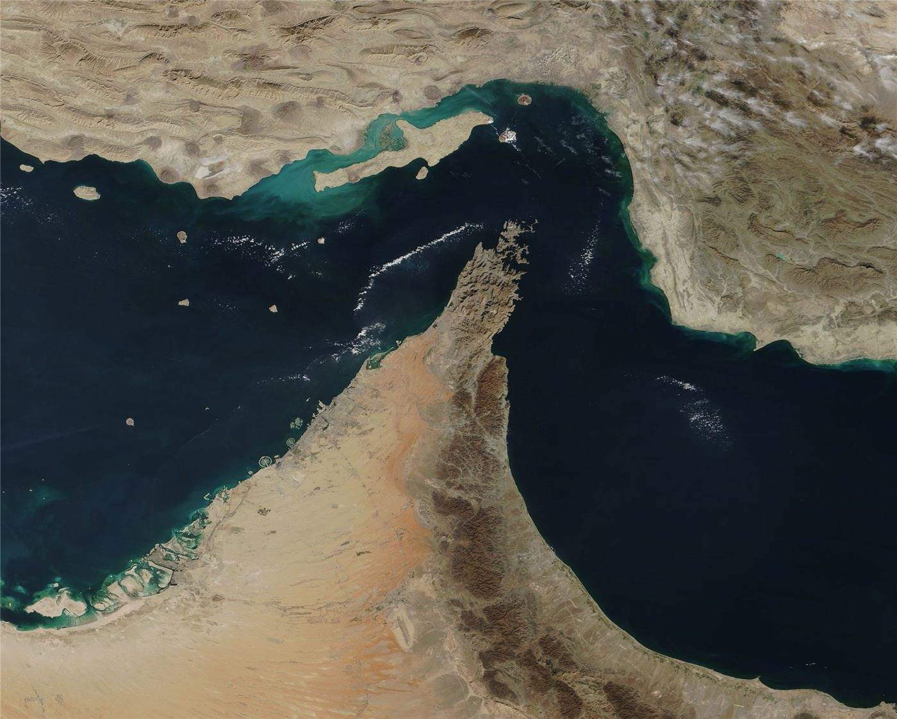

이란, 해상 통제구역 아라비아해까지 확대 통보… 상선 항로 재조정 압박
이란이 새 해상 통제구역이 아라비아해 일부까지 미친다고 통보했다. 사전 조율 없이 진입하는 선박은 제재 대상이 될 수 있다는 입장으로, 해운업계는 항로와 보험 조건을 다시 점검하고 있다.
양념자 기자 · 2026.09.13
橋국제

이란 혁명수비대가 새로 설정한 해상 통제구역의 범위가 아라비아해 일부까지 미친다고 밝혔다. 사전 조율 없이 해당 구역을 통과하는 선박은 제재 대상이 될 수 있다는 설명이 함께 나왔다.
광고 문의 · 300×250기존에 논의되던 구역이 걸프 입구 일대에 한정됐던 것과 비교하면, 통보된 범위가 외해 쪽으로 넓어진 형태다. 해운업계는 실제 집행 방식과 통보 절차를 확인하는 중이다.
항로와 보험
해운사들은 통제구역 통보가 나올 때마다 항로 우회, 항속 조정, 전쟁위험 보험료 재산정을 검토한다. 우회는 항해 일수와 연료비를 늘리고, 보험료 인상은 운임에 반영된다.
특히 원유와 액화천연가스, 컨테이너선이 몰리는 구간에서는 하루 단위의 일정 변경도 공급망 전반에 파급된다. 아시아 정유사와 발전사는 재고 일수와 대체 조달선을 함께 점검한다.
국제 반응
국제해사기구와 주요 해운국들은 항행의 자유 원칙을 근거로 우려를 표해 왔다. 다만 구체적 대응은 각국의 이해관계에 따라 온도차가 있다.
당장 확인해야 할 지점은 통보된 구역에서 실제 검문이나 나포 사례가 발생하는지 여부다. 사례가 축적되기 전까지 시장은 보험료와 운임에 위험을 먼저 반영하는 경향을 보인다.
출처·참고 (사실 확인용 — 본문은 직접 재작성)
· https://www.khan.co.kr/
· https://udn.com/
· https://www.khan.co.kr/
· https://udn.com/